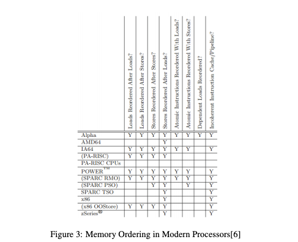

recall of memory order model
c++内存序
题外话
Cache Coherency vs. Memory Consistency
这两个概念容易混淆，重新捋一下。
关于Cache Coherency：
-
硬件概念，针对的是CPU Cache。
-
缓存了什么？缓存了主存的内容(MainMemory)，逻辑上可以理解为key是内存地址，value是内存地址对应的内容（单位长度通常为一个双字，dword）。从而使得CPU每次取址时不需要直接读内存。
-
结构如何？一般分为多层，可能有L1-L3 Cache: L1最靠近CPU，每个CPU核独享1个L1Cache，L2-L3Cache被多个CPU共享。
cpu-arch.png
-
Cache Coherency: 缓存一致性问题，主要是因为每个CPU有自己的L1Cache，A CPU更新了某个内存地址的内容。不仅需要更新自己的L1 Cache，还需要通过某种途径通知其他CPU的L1 Cache更新对应的内容（如果正好缓存了该地址的话）。具体的解法可以回顾一下体系结构的教材，几个关键字：Snooping（监听法）、Directory（目录法）.
-
更多缓存一致模型（Cache Coherence），如MESI/FirFly等协议。
-
缓存一致问题对于软件而言透明。内存序（or内存一致性）是针对软件而言的。
-
TSO: Total Store Order
ps: this is not timestamp oracle!
关于Memory Consistency：
-
问题描述： “内存”（MainMemory）在读（Load）或写（Store）时，由于「M1. 底层硬件一致性模型实现的不同」和「M2. 编译器优化造成的乱序」，最终指令执行顺序可能会出现与原始指令序列不同。如LL/LS//SL/SS乱序等。
M1. 底层硬件不同一致性模型可能导致的几种乱序：
 MemoryOrdersModernCPUs.png
-
问题场景：一般场景下不涉及内存序这类问题，不过在Lock-Free和高性能编程中需要考虑。
-
在C++11以前或使用C时，问题如何解决：人为地使用一些编译器屏障（针对2的）和内存屏障（针对1的）.来实现某些同步。
- 编译器屏障一般是类似以下这种内联汇编：
asm volatile("" : : : "memory");关于asm语法不是本文重点，下次再说： asm 1 asm 2
- 内核里的内存屏障实现：
可以看到x86_32使用lock指令， x86_64使用了各种fence指令。
// 优化屏障与内存屏障(Memory Barrier) ，从kernel里抠出来的。 #define barrier() __asm__ __volatile__("": : :"memory") #define mb() barrier() #define rmb() mb() #define wmb() mb() /* * Force strict CPU ordering. * And yes, this is required on UP too when we're talking * to devices. */ #ifdef CONFIG_X86_32 /* * Some non-Intel clones support out of order store. wmb() ceases to be a * nop for these. */ #define mb() alternative("lock; addl $0,0(%%esp)", "mfence", X86_FEATURE_XMM2) #define rmb() alternative("lock; addl $0,0(%%esp)", "lfence", X86_FEATURE_XMM2) #define wmb() alternative("lock; addl $0,0(%%esp)", "sfence", X86_FEATURE_XMM) #else #define mb() asm volatile("mfence":::"memory") #define rmb() asm volatile("lfence":::"memory") #define wmb() asm volatile("sfence" ::: "memory") #endif -
c++11之后：标准里引入了若干种内存序模型，并且直接把底层实现给你屏蔽掉了，开发者再也不用自己去写屏障了。
我个人使用最多的是以下三种：线性一致性/Release-Acquire一致性/Relaxed一致性，其一致性程度逐步减弱。注意：这几种一致性模型是指软件层面编译器提供这个保证。如你使用relaxed一致性，可能由于底层硬件架构的不同，实际上提供更强的一致性保证，如x86提供TSO一致性。
-
Sequentially-consistent ordering： 最高级别一致性，线性一致性，个人理解上就是所有打上这个标记的对象的存（store）,取（load）遵循全局时序。
-
Release-Acquire ordering: 打上memory_order_release的写（store）操作所属线程的在其之前（Happen-Before）的所有内存写操作能确保在打上memory_order_acquire的读（load）操作 所属的线程里可见（visible side-effects）。
If an atomic store in thread A is tagged memory_order_release and an atomic load in thread B from the same variable is tagged memory_order_acquire, all memory writes (non-atomic and relaxed atomic) that happened-before the atomic store from the point of view of thread A, become visible side-effects in thread B. That is, once the atomic load is completed, thread B is guaranteed to see everything thread A wrote to memory.
-
Relaxed ordering: 只提供原子性，不提供其他一致性保证。
-